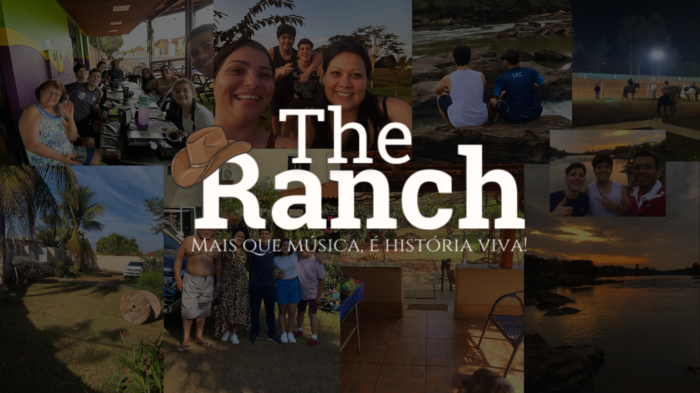

Como tudo começou...
Eaí Rancheiro, bão?
Seja bem-vindo ao The Ranch, um site pensado e desenvolvido para você amante do sertanejo ter uma verdadeira imersão no estilo musical mais amado do país!
Massss… Primeiro precisamos entender como surgiu tudo isso. Então prepara a pipoca que lá vem história.
Muito prazer! Eu me chamo Diogo Procopio, sou o idealizador e desenvolvedor do projeto The Ranch. Nasci e cresci em Osasco - SP, atualmente vivo com meus pais (Taís Cruz e Rodrigo Procopio) e minha irmã (Giovanna Procopio). Desde pequeno sou apaixonado pelo sertanejo, agronegócio e a vida no campo, em casa costumam dizer que eu sou o velho da família, principalmente no meu momento de lazer, quando estou ouvindo uma boa moda de viola e tomando o meu chimarrão.
A paixão pelo sertanejo não surgiu da noite para o dia, posso dizer que foi uma herança de família. Tudo começou com a minha bisavó materna (Hatuê Shimada) que veio do Japão direto para Tibagi (interior do Paraná), onde constituiu nossa família. Tempos depois viemos para São Paulo, e atualmente moramos a maior parte em Osasco, porém ainda temos primos que moram no Paraná.
Grandes nomes do sertanejo vieram do estado Paranaense, como as duplas Chitãzinho & Xororó, Chico Rey & Paraná, Rick & Renner e Gino & Geno,
tornando o Paraná um dos berços do sertanejo. Com isso, a minha família cresceu ouvindo esses grandes clássicos que acabaram se enraizando em nossa história.
Acendendo ainda mais a minha paixão por esse mundo caipira, meu avô (Ademir) costumava tocar algumas obras no violão quando eu era mais novo.
O mesmo avô e alguns tios possuem açougues, esses nas quais trabalhei por alguns anos, aguçando o meu interesse no agronegócio e na criação de gado.
Agora aos 20 anos me foi concedida a oportunidade de criar algo que me representasse e dissesse nos detalhes quem é o Diogo. Cá estamos nós!
Depois de contar minha história com o mundo sertanejo, te convido a conhecer um pouco mais sobre o The Ranch, uma parte de mim apresentada a você.
Espero que goste dessa experiência e aproveite ao máximo cada conteúdo desenvolvido com carinho.
E mais uma vez, SEJA BEM-VINDO(A) AO THE RANCH!
11 8765-4321
11 98765-4321
Rua Haddock Lobo, 595 - Cerqueira César,
São Paulo - SP, 01414-001